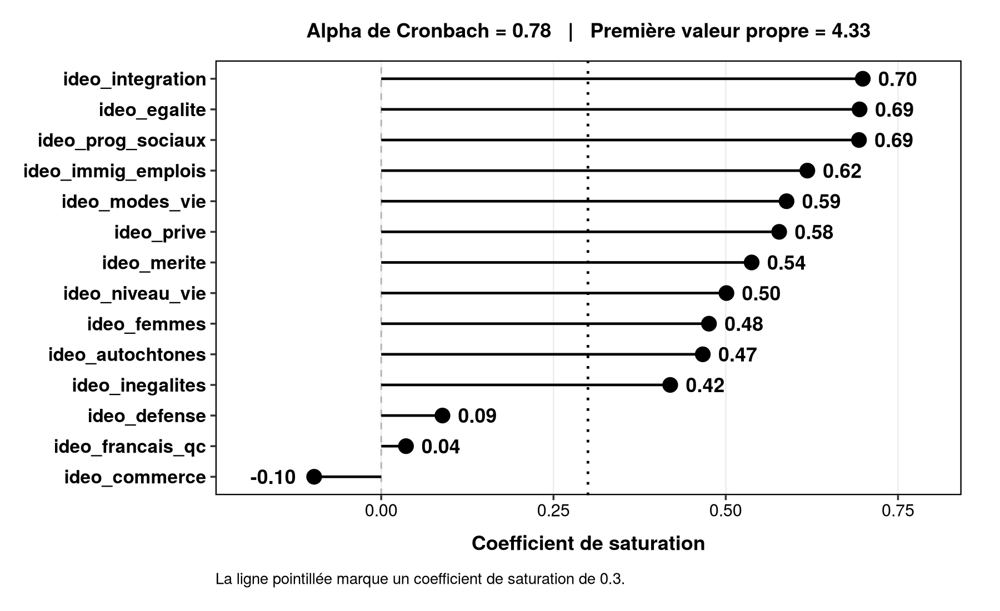
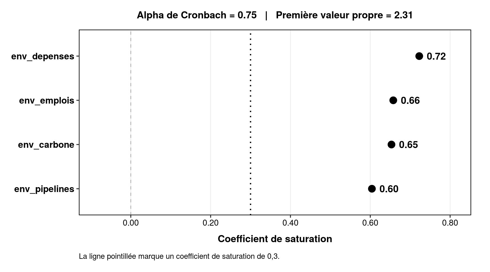
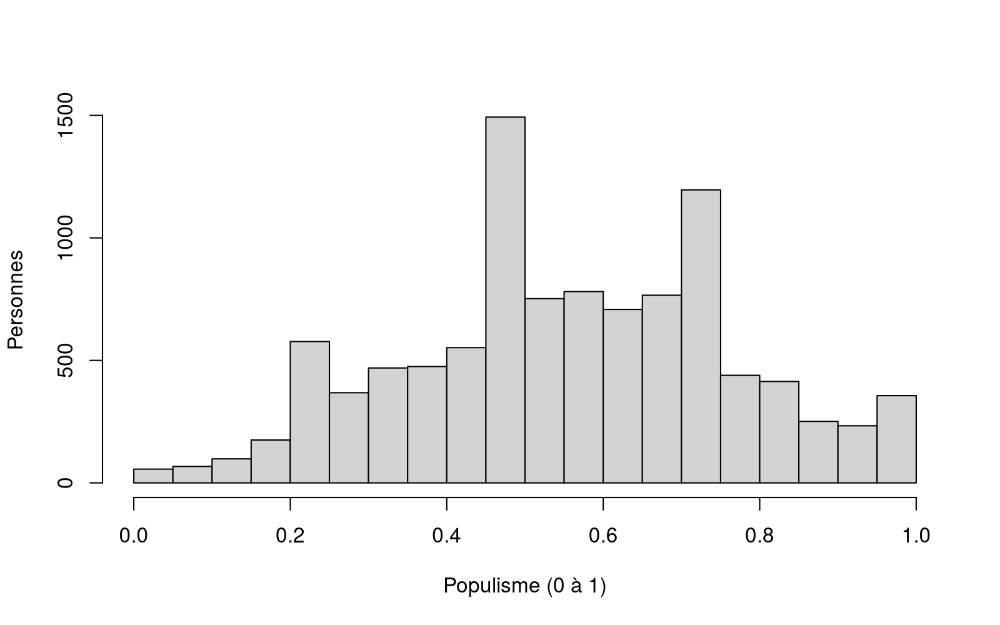

POL-2000 · Méthodologie quantitative
Les variables latentes
Séance 9 · jeudi 5 novembre 2026
Faculté des sciences sociales Automne 2026
Les variables latentes
Mesurer un concept qu’on ne voit pas. Puis ce qu’est un modèle de langue.
Aujourd’hui
Mesurer un concept
On veut étudier des choses qu’on ne voit pas.
Vos questions de recherche
- Dans quelle mesure la scolarité influence-t-elle l’intérêt pour la politique ?
- Dans quelle mesure gagner une élection rend-il plus satisfait de la démocratie ?
- Dans quelle mesure la scolarité augmente-t-elle la confiance envers les institutions ?
Mesure ? Pourquoi ce mot-là ?
Mesurer, ça veut dire quoi ?
Mesurer, c’est mettre un nombre sur une chose. Pour pouvoir calculer.
Mesurer un concept
Les données, ce sont des nombres mis sur des concepts. Tout le reste du cours calcule avec.
Comment mesurer ce qu’on ne peut pas voir ?
Aucune de ces choses n’est une colonne dans un sondage.
Un concept, des facettes, des questions, des réponses
On ne peut pas l’observer directement.
L’échelle d’idéologie de Merkley (2022)
On ne peut pas l’observer directement.
Merkley, E. (2022). Polarization Eh? Ideological Divergence and Partisan Sorting in the Canadian Mass Public. Public Opinion Quarterly, 86(4). Huit questions de la CES, deux dimensions, un score.
Comment procéder
Notre concept : la confiance envers les institutions
La scolarité augmente-t-elle la confiance envers les institutions ?
Personne ne répond à la question « faites-vous confiance aux institutions ? ».
Mais la CES 2025 demande la confiance envers dix institutions, une à la fois, après l’élection.
Dix institutions, une seule question
« Quelle confiance accordez-vous aux institutions suivantes ? »
- conf_fed Le gouvernement fédéral
- conf_prov Votre gouvernement provincial ou territorial
- conf_medias Les médias
- conf_elections Élections Canada
- conf_tribunaux Les tribunaux
- conf_religion La religion organisée
- conf_armee Les forces armées
- conf_ecoles Les écoles publiques
- conf_fonction La fonction publique
- conf_police La police
1 beaucoup 2 assez 3 peu 4 pas du tout 5 ne sait pas
Fidèle ? Valide ?
Fidèle : la même chose, à chaque mesure. Valide : la bonne chose.
L’examen d’histoire
Comment savoir si une question mesure ce qu’elle prétend mesurer ?
Cinq questions, vingt-quatre élèves
Vingt-quatre élèves, du plus faible au plus fort.
Données fictives : un schéma.
L’analyse factorielle compare toutes les questions et repère celle qui ne bouge pas avec les autres.
Pour un examen comme pour un concept : les questions qui mesurent la même chose répondent ensemble.
Trois chiffres, trois seuils
Les énoncés répondent-ils ensemble ?
La cohérence de tout le groupe. De 0 à 1.
Y a-t-il un concept dominant ?
La force de ce que les énoncés ont en commun.
Cet énoncé en fait-il partie ?
Un chiffre par énoncé : sa contribution au concept.
La confiance, pour vrai
Dix institutions de la CES 2025, une échelle, une régression.
Planifions notre code
# 1. Charger ces2025.rds, créer df_clean
# 2. Regarder une institution
# 3. Les dix institutions, de 1-4 à 1-0 ; ne sait pas devient NA
# 4. Vérifier le sens
# 5. Installer sondr, une seule fois
# 6. L'analyse factorielle : les dix
# 7. Sans celle qui détonne
# 8. L'échelle : la moyenne
# 9. L'appliquer : lm(confiance ~ scolarité)
# 10. Sauvegarder df_cleanD’abord les commentaires. Le code vient ensuite, sous chacun.
Une institution, telle que la CES la code
> table(as_factor(df_raw$pes25_conf_inst1_1))
1. A great deal 2. Quite a lot
537 2333
3. Not very much 4. None at all
1969 836
5. Don't know/ Prefer not to answer
209 pes25 : après l’élection, à la moitié des répondant.e.s. 1 = beaucoup … 4 = pas du tout, 5 = ne sait pas
> ▍De 1 à 4 vers 1 à 0 : beaucoup = 1. Ne sait pas devient NA
> confiance <- function(x) ifelse(x %in% 1:4, (4 - x) / 3, NA)
une fonction : 1 (beaucoup) devient 1, 4 (pas du tout) devient 0, le reste NA
> df_clean$conf_fed <- confiance(df_raw$pes25_conf_inst1_1)
la même recette, dix fois
> df_clean$conf_prov <- confiance(df_raw$pes25_conf_inst1_2)
> df_clean$conf_medias <- confiance(df_raw$pes25_conf_inst1_3)
> df_clean$conf_elections <- confiance(df_raw$pes25_conf_inst1_4)
> df_clean$conf_tribunaux <- confiance(df_raw$pes25_conf_inst2_1)
> ▍Les cinq autres, puis regarder
> df_clean$conf_religion <- confiance(df_raw$pes25_conf_inst2_2)
> df_clean$conf_armee <- confiance(df_raw$pes25_conf_inst2_3)
> df_clean$conf_ecoles <- confiance(df_raw$pes25_conf_inst2_4)
> df_clean$conf_fonction <- confiance(df_raw$pes25_conf_inst2_5)
> df_clean$conf_police <- confiance(df_raw$pes25_conf_inst2_6)
> table(df_clean$conf_fed, useNA = "ifany")
0 0.333333333333333 0.666666666666667 1 <NA>
836 1969 2333 537 14505 NA : pas de réponse après l’élection, l’autre moitié du sondage, ou ne sait pas
> ▍Le sens : deux institutions, la même direction
> cor(df_clean$conf_fed, df_clean$conf_tribunaux, use = "complete.obs")
[1] 0.5002907
positif : qui fait confiance au fédéral fait confiance aux tribunaux. Même direction, pas de retournement
> ▍Si une question avait dit le contraire des autres, il aurait fallu la retourner : 1 − x.
sondr, puis les gens qui ont répondu aux dix
> install.packages("remotes") # une seule fois
> remotes::install_github("clessnverse/sondr") # une seule fois
sondr n’est pas sur CRAN : on l’installe depuis GitHub
> library(sondr)
> df_fa <- na.omit(select(df_clean, starts_with("conf_")))
na.omit : seulement les gens qui ont répondu aux dix
> nrow(df_fa)
[1] 4862
4 862 personnes : la moitié du sondage postélectoral
> ▍topdown_fa(df_fa)une ligne : alpha, valeur propre, saturations

Une institution détonne
Le cigare de Churchill de la CES
« Quelle confiance accordez-vous aux institutions suivantes ? »
- conf_fed Le gouvernement fédéral
- conf_prov Votre gouvernement provincial ou territorial
- conf_medias Les médias
- conf_elections Élections Canada
- conf_tribunaux Les tribunaux
- conf_religion La religion organiséefaire confiance à une Église, ce n’est pas faire confiance à l’État
- conf_armee Les forces armées
- conf_ecoles Les écoles publiques
- conf_fonction La fonction publique
- conf_police La police
df_fa2 <- select(df_fa, -conf_religion)
topdown_fa(df_fa2)sans la religion organisée : alpha 0,86, tout au-dessus du seuil

Fidèle, oui. Valide ?
Concordance avec la théorie
Les neuf institutions sont-elles bien celles dont parle la littérature sur la confiance politique ? L’État, les tribunaux, la police, oui. Une Église, non.
Concordance avec d’autres mesures
L’échelle se comporte-t-elle comme on s’y attend ? Plus de confiance chez qui est satisfait de la démocratie (séance 8), moins chez qui a voté pour un parti perdant.
Les chiffres vérifient la fidélité. La validité, c’est vous qui la défendez.
L’échelle : la moyenne des neuf
> df_clean$confiance <- rowMeans(select(df_clean, starts_with("conf_"), -conf_religion))
la moyenne des neuf qu’on garde, ligne par ligne
> summary(df_clean$confiance)
Min. 1st Qu. Median Mean 3rd Qu. Max. NAs 0.0000 0.4444 0.5926 0.5654 0.7037 1.0000 15124
de 0 à 1 ; NA : au moins une institution sans réponse
> ▍hist(df_clean$confiance, main = "", xlab = "Confiance envers les institutions (0 à 1)", ylab = "Personnes")
une variable comme une autre, de 0 à 1

La scolarité augmente-t-elle la confiance ?
> df_clean$universitaire <- case_when( df_raw$cps25_education %in% 8:11 ~ 1, df_raw$cps25_education %in% 1:7 ~ 0 )
universitaire : a fréquenté l’université (8 à 11) ou non (1 à 7)
> modele <- lm(confiance ~ universitaire, data = df_clean)
> modele
Call:
lm(formula = confiance ~ universitaire, data = df_clean)
Coefficients:
(Intercept) universitaire
0.54410 0.04001
0,040 : sur une échelle de 0 à 1, les universitaires sont 0,04 plus haut
> ▍Retenir
- Un concept ne se voit pas. On le mesure par ses indicateurs.
- Plusieurs questions valent mieux qu’une, si elles répondent ensemble.
- Même sens, même échelle, pas de « ne sait pas » caché dans un chiffre.
- Les chiffres vérifient la fidélité. La validité, c’est votre argument.
Ce qu’est un modèle de langue
ChatGPT, Claude, Gemini, Copilot : une seule mécanique.
Tout ce qu’il fait, c’est prédire le jeton suivant
Décris l'hiver à Québec en une phrase courte.
Le modèle ne connaît que ce texte. Il doit produire le jeton suivant.
Le modèle ne voit pas des mots
La phrase qu’il vient d’écrire, telle qu’il l’a vue :
Même contenu, +56 % de jetons en français.
Le surcoût vaut pour toutes les langues éloignées de l’anglais, et la qualité y baisse aussi (Ahia et al., 2023).
Ce n’est pas une base de connaissances
UNE BASE DE DONNÉES
- trouvéle fait, à l'identique
- rien trouvé« je n'ai pas »
Deux issues possibles.
UN MODÈLE DE LANGAGE
- toujoursquelque chose de plausible
- —cette branche n'existe pas
Une seule issue possible.
Une référence bibliographique produite par un modèle est une hypothèse de référence jusqu’à ce que vous l’ayez vérifiée dans un catalogue. Le principe à retenir
L’hallucination n’est pas un bug
C’est la mécanique normale. D’où la règle : vérifier, toujours.
Le biais entre à trois endroits
Deux tiers du corpus sont un balayage du web
Des humains écrivent les réponses exemplaires, puis les classent
L’optimisation retient la régularité majoritaire
Il porte les trois.
Aucune étape suivante ne corrige la précédente.
Composition du corpus d’entraînement de LLaMA (Touvron et al., 2023).
Rôle → Tâche → Contraintes → Format
Le même besoin, deux prompts
Mon code marche pas, corrige-le.
Aucun contexte, aucune limite. Il réécrit tout, et vous ne savez plus ce qui a changé.
Je suis étudiant.e en science politique et je débute en R, dans Positron. Voici mon code et le message d’erreur. Explique-moi la cause de l’erreur en une phrase, puis propose la correction en changeant le moins de lignes possible. Ne réécris pas le reste.
Rôle, tâche, contraintes, format. Les quatre y sont. Et vous restez l’auteur.e du code.
Demandez à l’IA d’écrire le prompt
Ce que vous écrivez
« Je veux comprendre ce que fait chaque ligne d’un script R que je n’ai pas écrit. Écris-moi le prompt qui te fera l’expliquer ligne par ligne, sans le modifier. »
Ce que vous obtenez
Un prompt mieux structuré que le vôtre, en quelques secondes. Vous le lisez, vous le corrigez, vous le gardez.
Ce qui sort de chez vous
Règles relevées dans la documentation d’OpenAI le 24 août 2026. Vos données de la CES sont publiques. Votre travail, lui, ne l’est pas.
La règle du cours
- écrire du code R
- comprendre du code R
- déboguer du code R
- interpréter vos résultats
- rédiger vos travaux
Ce que vous affirmez, vous devez pouvoir le défendre.
« L’aurais-je accepté d’un assistant humain sans vérifier son travail ? »
Trois choses
 Datacamp Introduction to Regression in R · Simple Linear Regression
Datacamp Introduction to Regression in R · Simple Linear RegressionGrève le 12 novembre. Je serai sur place. S’il y a piquetage, le cours et l’examen 2 pourraient être reportés. Surveillez votre courriel.
Jeudi 12 novembre
Le problème fondamental de l’inférence causale. Puis l’examen 2.
Sous réserve de la grève : s’il y a piquetage, je vous écris.
Merci.
Faculté des sciences sociales POL-2000 · Automne 2026
Annexe : tout le code
La confiance envers les institutions dans la CES 2025, étape par étape. À refaire chez vous.
Avant de commencer, dans Positron
> library(dplyr)
> library(haven)
haven : pour lire les codes de la CES
> df_raw <- readRDS("ces2025.rds")
ces2025.rds, sauvegardé à la séance 2
> df_clean <- data.frame(id = 1:nrow(df_raw))
df_raw ne change jamais
> ▍# Séance 9 · mesurer un concept : la confiance envers les institutions, CES 2025
# 1. Charger
library(dplyr)
library(haven)
df_raw <- readRDS("ces2025.rds")
df_clean <- data.frame(id = 1:nrow(df_raw))
# 2. Regarder une institution
table(as_factor(df_raw$pes25_conf_inst1_1))
# 3. De 1-4 à 0-1 (1 = beaucoup), ne sait pas devient NA
confiance <- function(x) ifelse(x %in% 1:4, (4 - x) / 3, NA)
df_clean$conf_fed <- confiance(df_raw$pes25_conf_inst1_1)
df_clean$conf_prov <- confiance(df_raw$pes25_conf_inst1_2)
df_clean$conf_medias <- confiance(df_raw$pes25_conf_inst1_3)
df_clean$conf_elections <- confiance(df_raw$pes25_conf_inst1_4)
df_clean$conf_tribunaux <- confiance(df_raw$pes25_conf_inst2_1)
df_clean$conf_religion <- confiance(df_raw$pes25_conf_inst2_2)
df_clean$conf_armee <- confiance(df_raw$pes25_conf_inst2_3)
df_clean$conf_ecoles <- confiance(df_raw$pes25_conf_inst2_4)
df_clean$conf_fonction <- confiance(df_raw$pes25_conf_inst2_5)
df_clean$conf_police <- confiance(df_raw$pes25_conf_inst2_6)
table(df_clean$conf_fed, useNA = "ifany")# 4. Le sens : deux institutions, la même direction
cor(df_clean$conf_fed, df_clean$conf_tribunaux, use = "complete.obs")
# 5. sondr, une seule fois
install.packages("remotes") # une seule fois
remotes::install_github("clessnverse/sondr") # une seule fois
# 6. L'analyse factorielle : les dix institutions
library(sondr)
df_fa <- na.omit(select(df_clean, starts_with("conf_")))
nrow(df_fa)
topdown_fa(df_fa)# 7. Sans celle qui détonne
df_fa2 <- select(df_fa, -conf_religion)
topdown_fa(df_fa2)
# 8. L'échelle
df_clean$confiance <- rowMeans(select(df_clean, starts_with("conf_"), -conf_religion))
summary(df_clean$confiance)
hist(df_clean$confiance, main = "", xlab = "Confiance envers les institutions (0 à 1)", ylab = "Personnes")
# 9. L'appliquer
df_clean$universitaire <- case_when(
df_raw$cps25_education %in% 8:11 ~ 1,
df_raw$cps25_education %in% 1:7 ~ 0
)
modele <- lm(confiance ~ universitaire, data = df_clean)
modele
# 10. Sauvegarder
saveRDS(df_clean, "df_clean.rds")